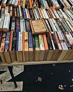
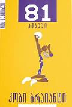
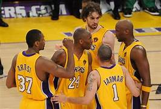
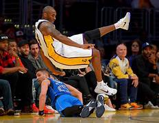
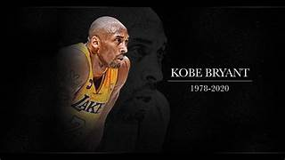
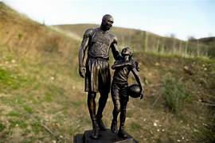

დღეს-დღეისობით დაწერილია ბევრი შესანიშნავი წიგნი.
წიგნი ადამიანს ეხმარება მიიღოს განათლება და
დააფიქროს ბევრ მნიშვნელოვან საკითხზე.
ჩემი საყვარელი წიგნი არის "81 ამბავი,კობი ბრაიანტი",
რომლის ავტორ-შემდგენელია ვაჟა სიმონიშვილი.
წიგნში გადმოცემულია კობის ურთიერთობა მწვრთნელებთან
და თავის გუნდელებთნ,ასე ვთქვათ "შიდა სამზარეულო".
კობი გამოირჩევოდა თავისი მშრომელობით,მენტალიტეტით
NBA-ს მოთამაშეები ბაძავდნენ მას,ცდილობდნენ მისგან
მიეღოთ რჩევები,რათა საკუთარი თავის უკეთესი ვერსიები გამხდარიყვნენ.
ზაზა ფაჩულია იხსენებს:"ის იყო ყველაზე ძლიერი კალათბურთელი,რომლის
წინააღმდეგაც მითამაშია.ერთ-ერთი არა - ყველაზე ძლიერი იყო.მოედნის
გარეთაც დიდი ადამიანი გახლდათ.კალათბურთელის გარდა ,კობი ბრაიანტი
იყო მამა ,მეუღლე,შვილი,მეგობარი.მას მერე,რაც კარიერა დაასრულა,თავის
ოჯახთან ყოფნით იღებდა სიამოვნებას.დიდი სპორტი დიდ მსხვერპლს მოითხოვს:
საკუთარ თავზე ხანგრძლივი მუშაობა გიწევს,არის თვეები,როცა უახლოეს ადამიანებს
ვერ ხვდები,მხოლოდ ვარჯიშებსა და თამაშებზე ხარ გადართული.კობიმ ოჯახისთვის
ბოლო წლებში მოიცალა,მაგრამ..."
სამწუხაროდ,კობი ბრაიანტმა უცაბედად დაგვტოვა 2020 წლის 26 იანვარს.
ის და მისი ქალიშვილი,სახელად ჯიჯი,თვითმფრინავის ავარიაში მოყვნენ
და ორივე გარდაიცვალა.
 